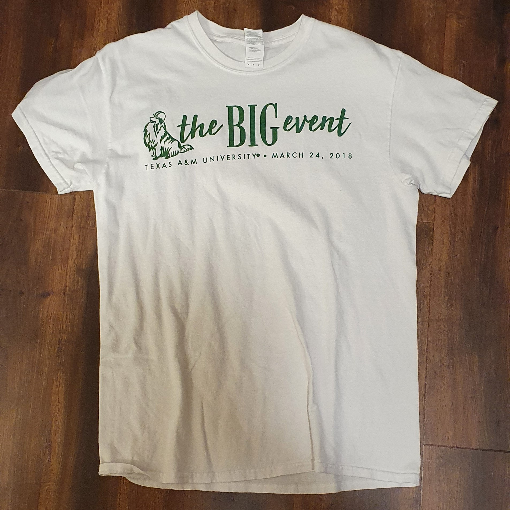

Big Event

Loaves & Fishes Soup Kitchen (Magnificat Houses)
I served food at Loaves & Fishes Soup Kitchen (Magnificat Houses) which is located in Houston Downtown. It was my first time to service to the public. Unfortunately, I did not have a chance to take a photo of myself during the service. But, I remember that it was a very busy day and I felt lucky to have the opportunity to give something back to community.